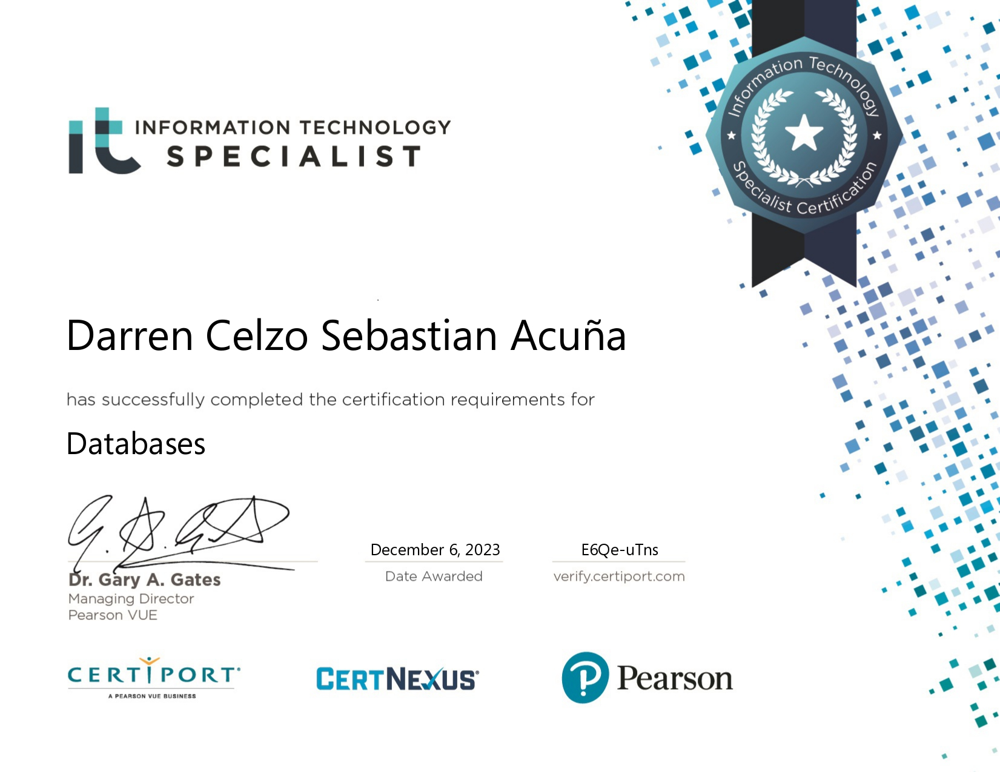
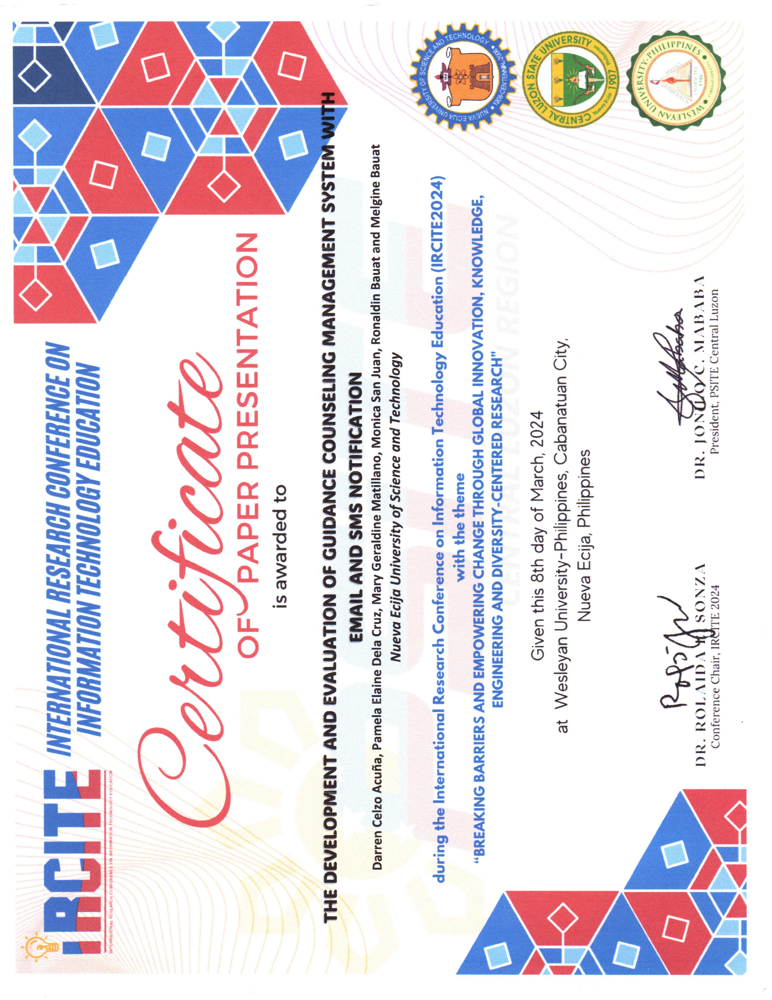
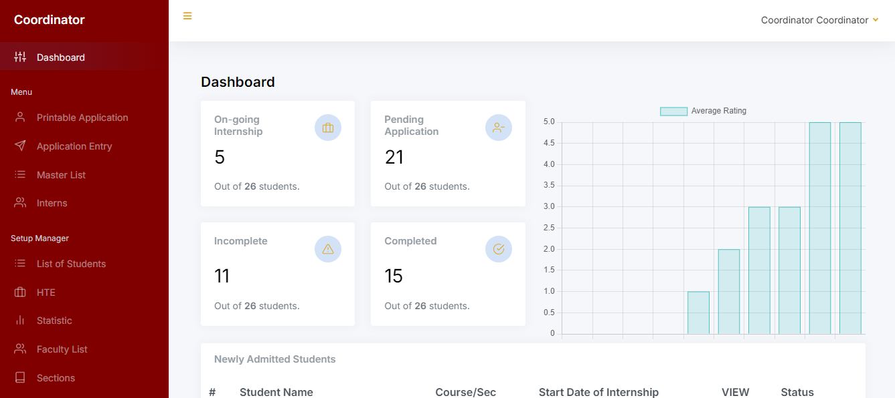
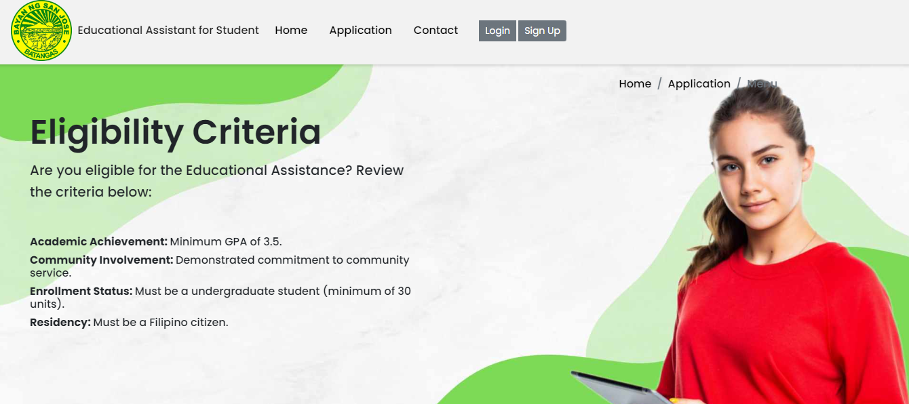
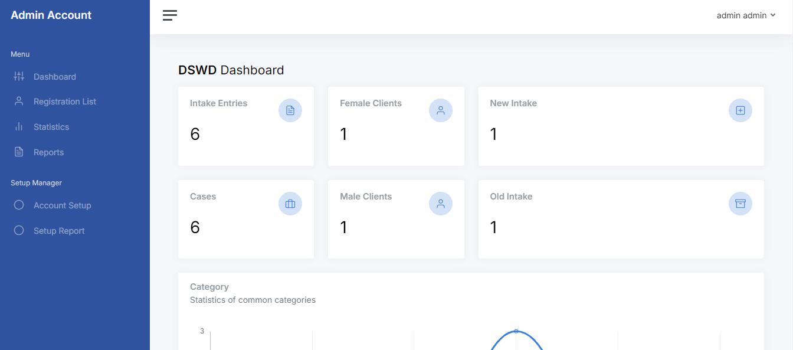

About
When I started senior high school, I chose the ICT strand due to my interest in computers and the growing demand in the tech industry. I began learning basic programming, which led me to pursue an Information Technology degree in college.
There, I advanced my programming skills and developed a management system.
In my final year, I worked as a freelance programmer, primarily creating management systems using PHP. This experience taught me valuable skills in client communication, time management, and independent problem-solving.
Now, I aim to secure a position where I can leverage my strong foundation in programming and networking, gain hands-on experience, and contribute to a forward-thinking IT environment. Driven by a passion for technology and continuous learning, I look forward to bringing my skills and dedication to your organization.
Certificates


Experience
Junior Programmer 1 - Job Order (NEUST MIS)
May 2024 - present
Serving as a junior programmer, collaborates with the development team on software development projects and provides technical support to interns and employees.
Intern (NEUST MIS)
January 2024 - May 2024
Collaborated and work with team on a web-based system project.
Freelancer (Fullstack, Backend)
2023 — Present
Build, developed and maintain web-based systems for clients.
Projects

NEUST Guidance Management with Decision-Support System↗
A comprehensive information system designed to facilitate seamless interactions between employees, students, and the Office of Guidance and Counselling. This system streamlines transactions, ensuring efficient communication and support for all users. (Email and SMS Feature)

Web-Based InfoCollege of Computer and Information Science CCIS Internship Program Monitoring System↗
This system is designed to manage the internship processes of On-the-Job Training (OJT) students and the companies that host them. It focuses on monitoring student performance and behavior during their OJT placements, ensuring alignment with academic and professional standards.

Design and Development of Comprehensive Online Scholarship Application and Record Management↗
The Comprehensive Online Scholarship Application and Record Management System is a web-based platform designed to streamline the scheduling and application process for students eligible for scholarships. The system facilitates the selection, application, and monitoring of scholarship recipients, enabling efficient tracking of their progress through an integrated online interface.

Web Based Information Management System for DSWD Regional Haven for Women Office in the Municipality of Rosario Batangas↗
This system is designed to manage the registration and reporting of cases handled by the Department of Social Welfare and Development (DSWD). It provides a flexible and efficient platform for tracking, recording, and generating reports on welfare cases, ensuring streamlined case management and accessibility of information.
Contact Information
Mobile No.: 09611917651
Gmail: darrencelzo77@gmail.com